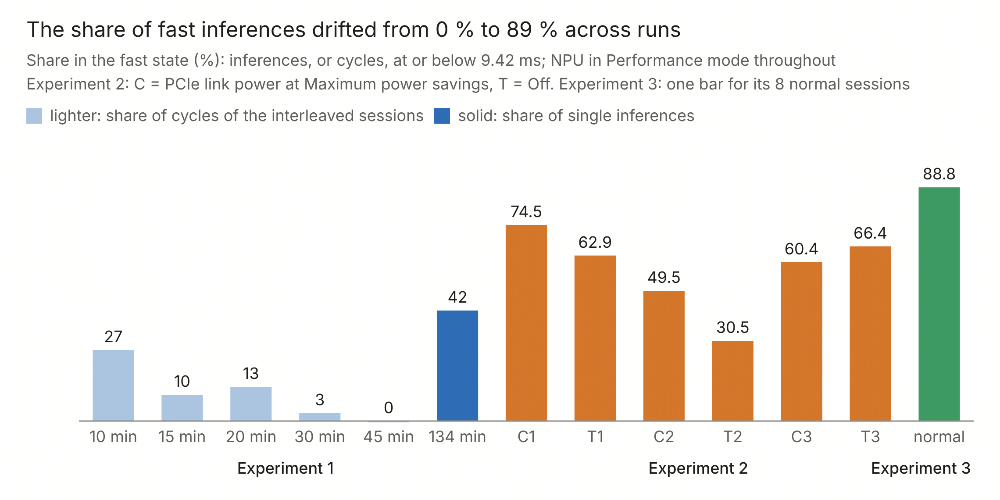
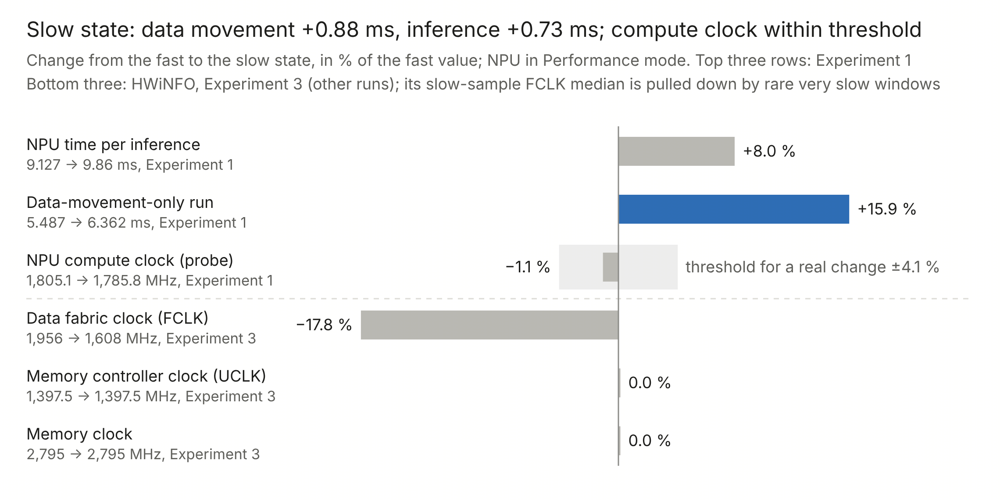
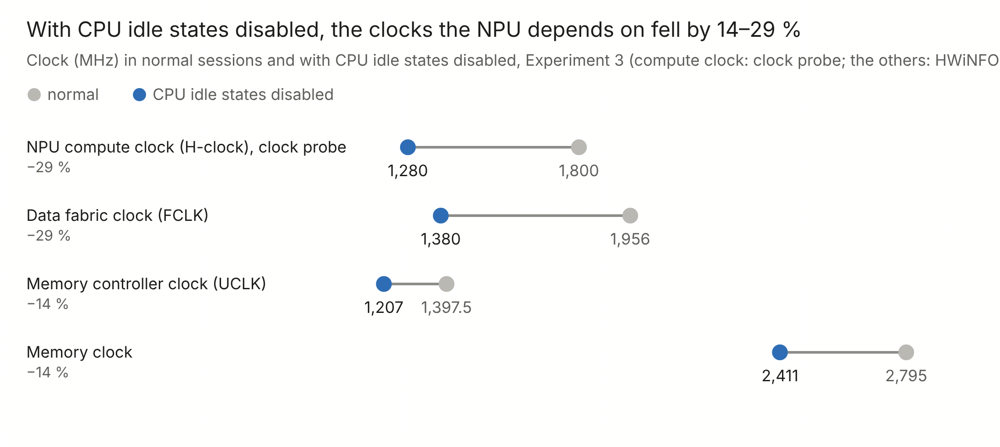
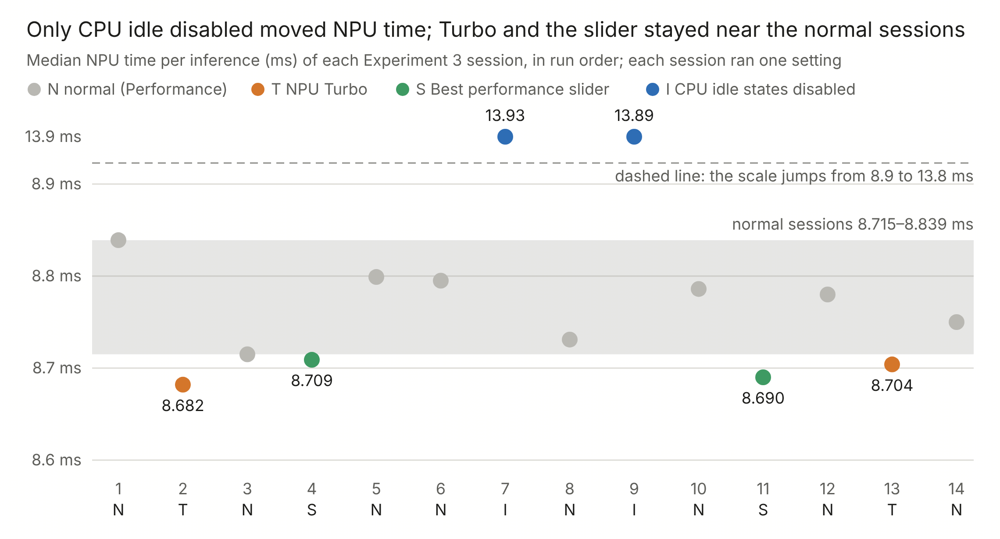

AMD XDNA 2 NPU on a laptop: power state, clocks and inference-time variability
Date: 2026-10-25, Version: 0.39 (DRAFT), Last edit time: 10:31 AEDT, 26 October
Author: Denis Ryndine: project direction, hardware runs, measurements, interpretation
Assistant: Claude (Anthropic), model claude-opus-5-5: analysis and drafting, under the author's direction
Abstract
This report examines why one unchanged NPU program gives different inference times on a laptop. A YOLOv8n object detector, ported to the AMD XDNA 2 NPU of a Ryzen AI 9 HX PRO 370 with the IRON / MLIR-AIE toolchain, was timed in three experiments, with identical outputs every time and the NPU in Performance mode. Its NPU time was set against the NPU's compute clock, read with a purpose-built probe, and against the processor's firmware sensors and power settings.
Key findings.
The same program took about 8.7–9.1 ms (fast state) or about 9.9 ms (slow state) per inference, rarely 13.9 ms; which state dominated changed over hours.
Between inferences the NPU's compute clock stayed at its top level, 1,800 MHz, in both states.
The slow state is slower data movement; heavy CPU load made inference 59 % slower and lowered the clocks around the NPU.
1 Summary
On one laptop with an AMD XDNA 2 NPU, the same YOLOv8n inference program took between about 8.7 and 9.9 ms of NPU time per inference (rarely about 13.9 ms), with identical outputs every time and the NPU in its Performance power mode throughout. The laptop moved between these speeds by itself, often within a second, and which speed dominated changed over minutes and hours.
This report calls these speeds states. In the fast state an inference takes about 8.7–9.1 ms; in the slow state, about 9.9 ms; a rare very slow state reaches about 13.9 ms. Each inference is assigned to the fast or slow state by its own time, with the dividing line at 9.42 ms. Finding 1 describes the states and how often each occurred.
1.1 Key findings.
One program, several speeds (Finding 1). With nothing changed and the NPU in Performance mode, YOLOv8n's NPU time per inference moved between a fast state (about 8.7–9.1 ms) and a slow state (about 9.9 ms), rarely 13.9 ms. Which state dominated drifted over minutes and hours.
The compute clock read between inferences does not explain it (Finding 2). Between inferences the compute-tile clock read about 1,800 MHz, its top level, in both states. Whether it dips during inference in the slow state is open: the firmware's own NPU clock reading is lower in slow samples.
Data movement slows; heavy CPU load slows the NPU further (Finding 3). In the slow state the data-movement-only design took 0.88 ms longer and the whole inference 0.73 ms longer: the slowdown of data movement accounts for the whole increase. A lower data fabric clock goes with the rare very slow state. With CPU idle states disabled, inference was 59 % slower and the compute, fabric and memory clocks were all lower. That these effects act through a power budget shared with the CPU cores is an interpretation, and not all readings fit it (Finding 3). The cause of the usual slow state is not established.
No setting tried made the program faster: PCIe link power management, the NPU's Turbo mode and the Windows power slider showed no effect above the measurement threshold, and disabling CPU idle states made it much slower (Settings tried). The Conclusions draw what follows for running and timing YOLOv8n inference on this NPU.
For anyone timing an NPU on a laptop, a single inference time is a sample from a range. To measure whether a change to a program makes it faster, the program before the change and the program after it are best run in turn, alternating within one session, so that both see the same power state, with that state recorded beside them.
2 The system and the workload
All measurements were made on one laptop, in October 2026, running one fixed NPU program: a YOLOv8n object detector that the author ported to the NPU with AMD's open-source IRON / MLIR-AIE toolchain.
| Item | Value |
|---|---|
| Laptop | Lenovo ThinkPad P14s Gen 6 AMD (machine type 21RV), BIOS R2XET40W (1.20) |
| Processor | AMD Ryzen AI 9 HX PRO 370 (Strix Point) |
| NPU | AMD XDNA 2: 8 array columns, each with a shim tile (interface to memory), a memory tile and 4 compute tiles (32 compute tiles in all) |
| Memory | LPDDR5X |
| Operating system and power plan | Windows 11 Pro; Balanced power plan; on AC power |
| NPU driver and firmware | Windows driver 32.0.20101.3760, NPU firmware 1.1.2.64 |
| NPU power mode | Performance (xrt-smi configure --pmode performance) during every timed run, unless an experiment says otherwise |
| Toolchain and runtime | mlir-aie commit 74ccfe99 (IRON), XRT 2.21.0 |
Table 1. The system measured. Hardware, software and power settings in force for every experiment.
2.1 The workload. YOLOv8n at 640 × 640 input, its weights and activations in bfp16, a block floating-point format in which 8 values share one exponent. The network's 98 layers run as 74 layer calls on 22 of the 32 compute tiles, joined into one NPU call per inference. One inference is 4,371,456,000 multiply-accumulates (8.74 × 10⁹ operations). Every output tensor and detection is identical, byte for byte, to a CPU reference model of the NPU's arithmetic, in every run reported here: the program and its data never changed between the fast and slow states.
2.2 What is timed. NPU time per inference: from the input being synchronised to the device until the NPU call returns. It contains only the NPU's work, its submission and completion; it does not contain image decoding, pre-processing on the CPU, or decoding the detections afterwards. All times in this report are NPU times. Times are medians of windows of 25 timed inferences unless stated (each window runs 30, the first 5 set aside), with the benchmark processes pinned to the four Zen 5 cores (logical processors 0–7). Where a session has two YOLOv8n windows per cycle, its figures use the window run directly after the other YOLOv8n window: 30 windows and 750 timed inferences per session.
3 How it was measured
The usual tool cannot answer the question: on this driver, xrt-smi reports the NPU's power mode but no clock and no power. Five tools were used instead.
| Tool | What it gives | How it works |
|---|---|---|
| Clock probe | The NPU compute-tile clock (MHz) | A separate small NPU program: one compute tile runs a loop of exactly 5 clock cycles per iteration (checked with a hardware trace: 5n + 16 cycles for n iterations). The host times it at 2,000,000 and at 20,000,000 iterations, 20 calls each. Clock = 90,000,000 cycles / difference of the median times; the subtraction removes the fixed cost of a call |
| Data-movement-only design | The time of an inference's data movement (ms) | The YOLOv8n program unchanged — the same array configuration and the same 74 instruction streams — with the compute kernels replaced by kernels that return at once. It performs the controller's set-up of every transfer, every transfer between memory and the NPU, every transfer inside the NPU and the cores' handshakes, without arithmetic. Its outputs are meaningless and not checked |
| Interleaved sessions | The three measurements side by side | Three resident processes take turns: a window of 30 YOLOv8n inferences (the first 5 set aside), one clock-probe reading, and 25 runs of the data-movement-only design; the order rotates every cycle; 30 cycles per session. Each cycle has two YOLOv8n windows, one after a probe and one after another YOLOv8n window, to measure whether the probes disturb the inference |
| Windows performance counters | Package and core power (RAPL), processor frequency, C-state residency, one thermal zone | Logged once a second on processor cores not used by the benchmark. The NPU power and NPU engine counters exist but always read 0; there is no NPU clock counter |
| HWiNFO (free version, portable) | Data fabric clock (FCLK), memory controller clock (UCLK), memory clock, NPU clock and power as reported by firmware, package, core and SoC power, the power limits (STAPM, PPT, TDC, EDC) | Reads the processor's firmware tables; needs administrator rights; logged to CSV every 0.111 s, at a cost of about 0.88 of one logical processor; used in Experiment 3 only |
Table 2. Measurement tools. What each tool measures and how; the clock probe and the data-movement-only design were written for this study.
The NPU can run only one of these programs at a time: the YOLOv8n program occupies the whole array, and two programs on a full-array configuration take turns rather than run together. The clock probe therefore reads the clock between inferences, not during them. The first inference after a switch from another program ran about 1.0 ms slow (the array being reconfigured), which the 5 set-aside inferences cover. Measured over Experiment 1, the effect of the probes on the following inference windows was between −0.011 and +0.015 ms per session: the probes did not create the effects reported here.
3.1 The experiments. One observation and three experiments, on 23–24 October 2026 (conditions in Appendix I):
Observation: a comparison of two versions of the program after a fresh boot, in which the two speeds first appeared.
Experiment 1, clock and data movement after a full boot: five interleaved sessions at 10, 15, 20, 30 and 45 minutes of uptime, followed by a breakdown of NPU time into compute and data movement.
Experiment 2, PCIe link power management: six sessions alternating the Windows setting between Maximum power savings and Off.
Experiment 3, firmware sensors and power settings: HWiNFO logging, and fourteen sessions alternating normal settings with NPU Turbo mode, the Windows power slider at Best performance, and CPU idle states disabled.
4 Finding 1: one program, several speeds
With nothing changed — same program, same data, NPU in Performance mode — the NPU time of one inference fell into distinct states. The observation run after a fresh boot showed two: about 9.01 ms (8 pairs of windows) and about 9.84 ms (22 pairs), switching inside a session while the same two processes ran. The later experiments resolved more.
| State | NPU time per inference (ms) | Where seen |
|---|---|---|
| Fast, lower | about 8.68 (main peak 8.675) | Experiment 3; Experiment 2 gave 8.82 as the median of the fast inferences in its three control sessions (8.83 over all six) |
| Fast, upper | about 9.08–9.13 | Experiment 3 (second peak, 9.075); Experiment 1 (fast state, 9.127) |
| Slow | about 9.86–9.94 | Experiments 1 and 2 |
| Rare, very slow | about 13.9 | Two cycles in one normal session of Experiment 3 |
Table 3. Speed states of the same program. NPU time per inference, Performance mode throughout; the fast-state peaks are from histograms of single inferences in 0.05 ms bins.
An inference is counted as fast at or below 9.42 ms, midway between the two states first seen; splitting the data into two groups by their means gave 9.438 ms. A window is fast when the median of its 25 timed inferences is at or below 9.42 ms. A cycle of the interleaved sessions takes the state of its second YOLOv8n window (the two windows of a cycle disagreed in 6 of 150 cycles), and the cycle's clock-probe reading and data-movement-only run take that state. The states are not long stretches: in Experiment 1 the fast state appeared as two runs of 15 s and 8.5 s, five single cycles and 32 bursts of 5–11 inferences inside slow windows, and in the breakdown measurement 90 of its 108 windows of 25 runs (54 of the full program, 54 of the variants with kernel work removed) held at least 5 runs of each state.
4.1 Which state dominates drifts over minutes and hours.
| Run | Share in the fast state (%) |
|---|---|
| Experiment 1, session at 10 min of uptime | 27 (8 of 30 cycles) |
| Experiment 1, at 15 min | 10 (3 of 30 cycles) |
| Experiment 1, at 20 min | 13 (4 of 30 cycles) |
| Experiment 1, at 30 min | 3 (1 of 30 cycles) |
| Experiment 1, at 45 min | 0 (0 of 30 cycles) |
| Experiment 1, at 134 min, after 87 min idle | 42 (565 of 1,350 inferences) |
| Experiment 2, six sessions at 182–196 min | 30.5 to 74.5 (229 to 559 of 750 inferences per session) |
| Experiment 3, normal sessions, evening | 88.8 (5,326 of 6,000 inferences, 8 sessions) |
Table 4. Share of the fast state. Fast means an NPU time at or below 9.42 ms. Experiment 1's first five rows count cycles of the interleaved sessions; the other rows count single inferences; the Experiment 3 row pools its 8 normal sessions.
In Experiment 1 the fast share fell while the laptop kept working and recovered after it had rested; in Experiment 2 it moved by up to 30 percentage points between neighbouring sessions (T2 to C3 in Figure 1) and by up to 36 points between sessions with the same setting (T2 to T3). The most likely reading, not tested, is a power limit that follows the laptop's recent thermal history (Finding 3).

Figure 1. Share of the fast state, session by session. Lighter bars count cycles of the interleaved sessions, solid bars count single inferences; Experiment 3 is one bar for its 8 normal sessions.
The share of inferences in the fast state is never fixed. After the full boot (Experiment 1) the share of fast cycles fell from 27 % to 0 % as the sessions went on, and the share of fast inferences was 42 % after the laptop had rested for 87 minutes. Three hours later (Experiment 2) it moved between 30.5 % and 74.5 % from one session to the next, whatever the PCIe setting; in the evening (Experiment 3) the normal sessions were 88.8 % fast. The same program would have given a different median NPU time in each of these runs. Neither state is the usual one in general: in the hour after the full boot almost every inference was slow, three hours later the two states were about even, and in the evening almost every inference was fast. Counted over every timed inference under normal settings (Experiment 1's sessions and breakdown, Experiment 2's three control sessions and Experiment 3's eight normal sessions), 8,337 of 13,350 were fast, 62 %, but that figure mostly reflects the evening run, which had the most inferences.
5 Finding 2: the compute clock read between inferences does not explain it
Between inferences, the compute-tile clock stayed at its top level in both states. A clock cause of the 8 % slow state would have been a drop of about 150 MHz; a change had to exceed 73 MHz to count as real (explained under Table 5), and the probe saw 19 MHz.
| Reading | Clock (MHz) |
|---|---|
| NPU power mode Default, 10 control readings: median | 1,405.9 |
| NPU power mode Performance, 10 control readings: median | 1,800.6 |
| Performance, 30 readings back to back: median | 1,802.3 |
| Performance, 30 readings back to back: highest minus lowest | 24.4 |
| Threshold for a real change, set before the runs (3 × that range) | 73.3 |
| Experiment 1, the 16 readings in fast cycles: median | 1,805.1 |
| Experiment 1, the 134 readings in slow cycles: median | 1,785.8 |
Table 5. NPU compute-tile clock from the clock probe. Performance mode unless stated; the Default and Performance controls show that the probe sees a real clock change.
5.1 How to read the 24.4 and the 73.3 MHz. They are not two resolutions. 24.4 MHz is the probe's own noise: 30 readings of a clock that did not change spread over 24.4 MHz, so a single reading can be off by about that much. 73.3 MHz is a decision threshold, fixed before the experiment: a difference between two sets of readings was to count as a real clock change only if it exceeded three times that noise. The factor of three is a safety margin, a common rule of thumb, so that noise alone does not produce a "change"; it is a choice, not a property of the probe. Two observations support it as adequate here: during the sessions the readings within one state spread 37–44 MHz, wider than in the quiet test, and the change being looked for, a clock explanation of the 8 % slow state, would be about 150 MHz, twice the threshold. The difference actually seen, 19.3 MHz, is below both the threshold and the quiet-test noise.
5.2 The readings match the driver's clock table. AMD's open-source NPU driver (amdxdna, Linux) defines 8 clock levels for this NPU generation, each an "NPU clock" and an "H-clock" pair; the H-clock is the one the driver uses to compute the NPU's TOPS, so it is the compute tiles' clock. Level 7 is 1,267 / 1,800 MHz and level 5 is 1,056 / 1,408 MHz. The probe's 1,800.6 and 1,405.9 MHz are these two H-clock values: Performance mode holds level 7, and Default mode on the Balanced plan gave level 5. (The Windows driver is assumed to use the same table, which the readings support.) Source: the clock table in the driver file npu4_regs.c (References, item 1).
5.3 Inside the inference, the kernel times cannot settle the question. The clock probe reads the clock between inferences. During inference, the breakdown in Finding 3 shows the convolution kernels' time not growing in the slow state (3.09 ms fast, 2.95 ms slow). A 1 % lower clock would add about 0.03 ms to the kernels' 3 ms; an 8 % lower clock about 0.25 ms. But in the slow state the breakdown's own check fails by 0.61 ms (removing the kernel work in two parts does not remove as much time as removing all of it at once), and one part comes out negative, so it cannot detect a change of 0.25 ms. The kernel times therefore neither confirm nor rule out a lower compute clock during inference.
5.4 The firmware's NPU clock reading. HWiNFO, which reads the processor's firmware tables, reported an NPU clock of 1,792 MHz in fast samples and 1,520 MHz in slow ones. AMD's Linux driver takes the firmware's NPU clock reading as its H-clock (References, item 1). If HWiNFO reads the same value, 1,792 MHz matches the top level (1,800 MHz), and 1,520 MHz, which is not a level of the table, is an average over samples in which the clock level changed. Each sample is an average over 0.111 s, which may include time between inferences. Experiment 3 also showed that the firmware does lower the NPU's clock level under power pressure (Finding 3). Whether the compute clock dips during inference in the usual slow state is therefore open; this reading is consistent with a dip but does not show one. Under heavy CPU load the two sources did differ: the probe read 1,280 MHz between inferences, while HWiNFO read 1,152 MHz over time that includes inference (Section 6.5).
6 Finding 3: data movement slows; heavy CPU load slows the NPU further
The slow state is a slowdown of data movement: in the slow state the data-movement-only design took 0.88 ms longer, about as much as the whole inference (0.73 ms longer). The breakdown (Table 7) puts the extra time outside the compute kernels, though the breakdown is less reliable in the slow state (its check fails by 0.61 ms).

Figure 2. What changes between the fast and the slow state. Change in per cent of the fast-state value; under each name, the two values and the experiment they come from.
The two time measurements grow: the full inference by 0.73 ms (8 %), its data movement alone by 0.88 ms (16 %). The compute clock read by the probe moves by −1.1 %, inside the ±4.1 % threshold for a real clock change (grey band). Of the clocks HWiNFO reads, only the data fabric clock is lower in slow samples (−17.8 %); the two memory clocks do not change. The fabric clock's slow-sample median is pulled down mainly by the rare very slow windows, as the paragraphs after Table 8 explain.
6.1 Reading the figure. Two relationships can be read from it, and only one holds. The data movement and the whole inference are measured in the same runs, and in milliseconds their slowdowns are about equal: +0.875 ms for data movement alone, +0.73 ms for the inference. The arithmetic: data movement alone takes 5.49 ms, 60 % of the 9.13 ms inference. If all of its 0.875 ms slowdown reached the inference, the inference would slow by 0.875 / 9.13 = 9.6 % (16 % × 60 %). It slowed by 0.73 ms, 8.0 %: about 0.14 ms of the extra data-movement time was hidden behind computation. The similar sizes of the FCLK drop (−17.8 %) and the data-movement slowdown (+16 %) are not cause and effect: they come from different runs (below and above the dashed line), and the FCLK figure is pulled down by rare very slow windows, while in the common slow windows FCLK stayed near 1,900 MHz.
| Run | Fast state (ms) | Slow state (ms) | Slow − fast (ms) |
|---|---|---|---|
| YOLOv8n inference | 9.127 | 9.860 | +0.733 (+8.0 %) |
| Data-movement-only design | 5.487 | 6.362 | +0.875 (+15.9 %) |
Table 6. Full inference and data movement only, Experiment 1. Medians of the window medians over five sessions, 16 fast and 134 slow cycles; each cycle's data-movement-only run takes the state of the cycle's second YOLOv8n window.
In per cent, data movement alone grows twice as much as the full inference (16 % against 8 %) mainly because it is the smaller base: it takes 60 % of the inference's time. In milliseconds it grows by 0.14 ms more than the full inference; that part of its slowdown is hidden behind computation in the full program.
| Part of the NPU time (ms) | Fast state | Slow state |
|---|---|---|
| Controller's set-up of the instruction streams, per-call cost and core loop (measured once, carried) | 2.437 | 2.437 |
| Convolution kernels | 3.092 | 2.949 |
| Add, max-pool and upsample kernels | 0.439 | −0.043 |
| Remainder, the total minus the other parts: data movement and handshakes not hidden by computation | 3.068 | 4.534 |
| Total NPU time per inference | 9.037 | 9.876 |
Table 7. Where the NPU time goes, by state. The full program against three variants with kernel work removed (no convolution, no add / pool / upsample, none at all), 9 sessions; parts as differences between them, remainder as the total minus the other parts.
The parts add up to the total by construction, because the remainder is the total minus the other parts. The check of the method is a different one: removing the convolution work and the add / pool / upsample work separately should save as much time as removing all the kernel work at once. In the fast state the two separate removals fall short of the whole removal by 0.16 ms, and all parts are positive. In the slow state they fall short by 0.61 ms and one part comes out negative, because the variants with kernel work removed slow down more than the full program. What the slow state shows clearly is where its extra time goes: into the remainder, +1.47 ms, and not into the kernels. Each run of the full program is classified by its own time against 9.42 ms; each variant's runs are classified against a dividing line found the same way in that variant's own times (5.84, 6.43 and 9.26 ms for the no-work, no-convolution and no-add / pool / upsample variants), which gives fast and slow levels of 5.37 and 6.31 ms, 5.92 and 6.92 ms, and 8.64 and 9.89 ms.
6.2 How Table 7 relates to the 16 %. The remainder grows from 3.068 to 4.534 ms, +1.466 ms or +48 %, but that percentage is not a measured slowdown of data movement: because the method's check fails in the slow state, the remainder also absorbs the drop of the two kernel parts (−0.14 and −0.48 ms), which is an effect of the subtraction. The comparison that holds is in milliseconds. The total NPU time grows by 0.84 ms here (9.037 to 9.876 ms) and by 0.73 ms in Table 6, while the data-movement-only run grows by 0.875 ms (Table 6). The slowdown of data movement is therefore about as large as the whole increase of the inference: it accounts for all of it, with part of it hidden behind computation in the full program.
6.3 The firmware sensors. In Experiment 3, HWiNFO read the following clocks under YOLOv8n load:
| Clock (MHz) | Fast samples | Slow samples |
|---|---|---|
| Data fabric clock (FCLK) | 1,956 | 1,608 |
| Memory controller clock (UCLK) | 1,397.5 | 1,397.5 |
| Memory clock | 2,795 | 2,795 |
Table 8. Data fabric and memory clocks by state. Medians of HWiNFO samples (every 0.111 s) that fall wholly inside fast or wholly inside slow inferences: 1,154 fast and 45 slow samples from the 12 sessions without CPU idle states disabled; at idle FCLK ranges from about 1,100 to 1,960 MHz.
The memory clocks did not change, so the speed of the memory itself is not the cause. The data fabric connects the NPU's shim tiles to the memory controller, so its clock governs the NPU's reads from and writes to memory; transfers inside the NPU run on the NPU's own clocks. A lower fabric clock went with a slower data-movement-only design (correlation −0.66 over 360 windows, one per cycle in the 12 sessions without CPU idle states disabled; −0.96 with those 2 sessions included). Of those 360 YOLOv8n windows, 9 were slow (fewer than half of their 25 inferences fast), all in normal sessions. Only 4 of the 9 had a fabric clock below 1,740 MHz: the three slowest windows, 12.2–13.9 ms at 1,398–1,711 MHz, and one window of 9.48 ms at 1,641 MHz; the other five, at 9.6–10.3 ms, kept FCLK at 1,888–1,915 MHz. In one normal session, a 13.9 ms state lasted two cycles at FCLK 1,398 MHz with the compute clock unchanged. The fabric clock therefore goes with the very slow state, but not with the usual one. That 13.9 ms state and the sessions with CPU idle states disabled (FCLK 1,380 MHz, compute clock 29 % lower, Table 9) took about the same time: at that fabric clock, a 29 % lower compute clock added almost no time, so the fabric, not the compute clock, set the inference time.
6.4 The power limit. Under YOLOv8n load the processor package ran at its STAPM limit, 100 %, about 24 W. STAPM (Skin Temperature Aware Power Management) is AMD's sustained power limit for laptop processors: set by the laptop maker, enforced by the processor's firmware over an average of minutes, and lower after a period of heavy work. The other limits (PPT, TDC, EDC, thermal) were below their maxima, and there was no thermal throttling. In the slow state the CPU cores drew more power and the rest of the chip (SoC) less, at the same total: the budget moved from the side that serves the NPU to the cores. Two readings do not fit this simply. First, the reading at the limit comes from Experiment 3, in which 88.8 % of normal inferences were fast, so being at the limit went mostly with the fast state. Second, in Experiment 1, mostly slow, the Windows RAPL counter showed a lower package power in slow windows (10.7 W) than in fast ones (16.7 W) (Limitations); if that counter is right, the package was well below 24 W in the slow state there.
6.5 Forcing the cores busy shows the coupling. With CPU idle states disabled (the cores never sleep), every inference was slow and the clocks around the NPU fell:
| Clock (MHz) | Normal | CPU idle disabled |
|---|---|---|
| NPU compute clock (H-clock), clock probe | about 1,800 | 1,280 |
| Data fabric clock (FCLK) | about 1,956 | 1,380 |
| Memory controller clock (UCLK) | 1,397.5 | 1,207 |
| Memory clock | 2,795 | 2,411 |
Table 9. Clocks with CPU idle states disabled. Experiment 3, the 8 normal sessions against the 2 with CPU idle states disabled; HWiNFO clocks are medians over sessions of per-session medians of window means. The compute clock, 1,280 MHz, is level 3 or 4 (1,267 MHz) of the driver's table.
NPU time rose from about 8.75 ms in the neighbouring normal sessions to 13.93 and 13.89 ms (+59 %), the data-movement-only design took 7.9 ms, and package power rose to 29 W, above the 24 W STAPM level of the normal sessions. STAPM is an average over minutes and a short session can run above it, so which limit set the lower clocks here was not measured: the clocks around the NPU fell while package power rose. The compute clock in Table 9 is from the clock probe, read between inferences (median 1,280.5 MHz in both sessions). HWiNFO's NPU clock in the same sessions had a median of 1,152 MHz, the H-clock of level 2 in the driver's table; it averages over time that includes inference, so the compute clock may be lower during inference than between inferences.

Figure 3. Clocks with CPU idle states disabled. Grey: normal sessions; blue: sessions with CPU idle states disabled; the percentage under each name is the change.
Keeping the CPU cores busy lowered all four clocks at once: the NPU's compute clock and the data fabric clock by 29 %, the memory controller and memory clocks by 14 %, while package power rose to 29 W. Two things here have different standing. Measured, in both sessions and well above the variation between sessions: heavy CPU load slowed the NPU by 59 % and lowered its compute, fabric and memory clocks. This is a finding, and it is part of Key finding 3. Interpreted, not measured directly: that the effect acts through the power budget the NPU shares with the CPU, which is consistent with the package running at its STAPM limit in the normal sessions, though package power here rose to 29 W, above that limit. The result also concerns heavy, forced CPU load; it does not show that the ordinary slow state is caused by CPU load.
6.6 What is and is not established. Established: the program is not the cause; the compute clock between inferences does not explain the slow state; data movement slows; the processor was at its power limit under load in Experiment 3, and heavy CPU load lowers the clocks the NPU depends on. Consistent with the data but not established: that the usual slow state is a smaller share of the power budget for the data path, for example short fabric-clock dips shorter than one 0.111 s sample, or memory power states that add latency without changing a clock.
7 Settings tried
Four settings were tested by alternating sessions with the setting and without it, so that every test session had a normal session next to it in time. A setting counted as helping only if it lowered the NPU time against both neighbouring normal sessions, in every repetition, by at least 0.15 ms on average (the mean of the test session's differences from the normal session before it and the one after it, over both repetitions). The rule was fixed before each run; the 0.15 ms was a chosen threshold, not derived from earlier data. Measured afterwards, neighbouring normal sessions differed by 0.006–0.124 ms in Experiment 3, and neighbouring sessions by 0.122–0.653 ms in Experiment 2, so the PCIe test could detect only a larger effect.
| Setting | How it was set | Result |
|---|---|---|
| PCI Express link state power management: Off instead of Maximum power savings | powercfg, active plan, AC value | No effect found. Session medians in run order: 8.968 (C1), 9.110 (T1), 9.441 (C2), 9.835 (T2), 9.182 (C3), 9.060 ms (T3); per pair +0.142, +0.394 and −0.122 ms |
| NPU power mode Turbo instead of Performance | xrt-smi configure --pmode turbo, set before the program opens the NPU | No effect found: −0.078 ms on average, under the 0.15 ms threshold |
| Windows power slider at Best performance instead of Balanced | Windows power API (this Windows build's powercfg has no slider command) | No effect found: −0.071 ms on average |
| CPU idle states disabled | powercfg, processor idle disable, active plan only | Harmful: +5.15 ms on average (+59 %) |
Table 10. Settings tried and their effect on NPU time. Experiment 2 (PCIe, six sessions) and Experiment 3 (the other three, two sessions each with a normal session on both sides).
| Session | Setting | NPU time (ms) | Normal session before (ms) | Normal session after (ms) |
|---|---|---|---|---|
| 2 | Turbo | 8.682 | 8.839 | 8.715 |
| 4 | Best performance slider | 8.709 | 8.715 | 8.799 |
| 7 | CPU idle disabled | 13.930 | 8.795 | 8.731 |
| 9 | CPU idle disabled | 13.888 | 8.731 | 8.786 |
| 11 | Best performance slider | 8.690 | 8.786 | 8.780 |
| 13 | Turbo | 8.704 | 8.780 | 8.750 |
Table 11. Experiment 3 session by session. Median NPU time per inference of each test session and of the normal sessions before and after it, each over the session's 750 timed inferences; 14 sessions, 25,200 inferences run, all outputs identical.

Figure 4. NPU time per session in Experiment 3. Median NPU time per inference of each of the 14 sessions, in run order; each session ran one setting, marked by colour and letter; the grey band spans the normal sessions; the axis is broken between 8.9 and 13.8 ms.
The Turbo and Best performance slider sessions lie at or just below the lower edge of the band of normal sessions, within 0.16 ms of the normal sessions next to them. Both settings were faster than both of their neighbouring normal sessions in every repetition, but by less than the 0.15 ms on average that the rule required, which is why neither was counted as an effect. The two sessions with CPU idle states disabled sit about 5 ms above the band. The band itself, 0.124 ms wide, is the variation between sessions with nothing changed, against which every setting had to be judged.
7.1 Why Turbo did not help. In AMD's Linux driver, Performance and Turbo both hold the top clock level; Turbo only switches off clock gating, so idle parts of the NPU keep their clocks running. The slowdown is in data movement, which keeping idle clocks running is not expected to speed up. With clock gating off, the NPU's idle parts keep drawing some power from the shared budget; whether that cost anything was not measured (NPU and package power were not compared per setting), and no slowdown was seen: the Turbo sessions were 0.03–0.16 ms faster than the normal sessions next to them. Turbo was also tested only while the laptop was mostly in its fast state (88.8 % of normal inferences), so it had little slow time to recover. Its sessions gave the fastest session medians recorded for this program (8.682 and 8.704 ms, about 1.0 TOPS), mainly because of that fast state.
7.2 PCIe link power management. The NPU sits on the processor die, and its memory traffic passes through the data fabric, not over a PCIe link; during an inference the host does not communicate with it. The setting could at most change a link's wake-up time at submission and completion, microseconds per inference, which agrees with the result.
8 What this means for measuring an NPU on a laptop
A single NPU time is a sample from a range. On this laptop the same program measured 8.7–9.9 ms per inference (rarely 13.9 ms), about 1.0 to 0.88 TOPS, depending on a state the user does not set. A figure is best reported with its range, or with the state it was taken in; reporting the longest recorded session is the cautious choice.
The NPU power mode does not fix the speed. Performance mode held the compute clock at its top level throughout, yet the time still varied by 8 %; Turbo gave no measurable gain.
xrt-smion this driver shows neither clocks nor power.Compare before and after a change in one session. The swing between states (about 0.8 ms per inference here, 8 %) can be larger than the effect of the change being measured. Two steps help. First, run the two programs in turn, in short windows, so that both run in the same power state. Second, sort every inference into the fast or the slow state by its time, and compare the two programs within each state: fast inferences with fast ones, slow with slow. The difference between the states then does not enter the comparison. The state needs a marker that does not depend on the program being compared: a fixed dividing line (9.42 ms here) moves inferences of a program that a change makes slower or faster into the other state. The state of an unchanged reference window run beside each program, or a dividing line taken from each program's own histogram, avoids this. The fast state also has two peaks 0.4 ms apart (Table 3), so fast with fast can still mix them. The settings tests in this report compared session medians and did not yet use this method.
Keep CPU load low and constant while timing the NPU. This rests on two measurements in this report. Under NPU load in Experiment 3 the processor ran at its sustained power limit, and in the slow state the CPU cores drew more of it and the rest of the chip less (Section 6.4, "The power limit"). Keeping the cores busy, with CPU idle states disabled, lowered the fabric, memory and NPU clocks and made inference 59 % slower (Table 9). So extra CPU work during inference can slow the NPU itself. Running host work at the same time as the NPU to raise throughput would add such CPU work; its effect was not measured here.
Record the power state. NPU-side tools show nothing of it: xrt-smi reports no clock and no power. In this study two records helped interpret runs. HWiNFO's fabric clock identified the very slow windows (about 1,400 MHz against about 1,956 MHz, Finding 3). And the fast share followed what the laptop had done before: it fell while the laptop kept working and recovered after it rested (Table 4). Neither record explained the usual slow state, so they show the context of a run, not the cause of every difference.
9 Conclusions
For YOLOv8n on this laptop's XDNA 2 NPU, the program's own work is stable; the time around it is set by the processor's power management. Each conclusion names the findings it rests on.
The program stays the same; the laptop's state changes (from Finding 1 and Finding 2). The YOLOv8n program's instructions and its outputs were the same in every run; only the state of the laptop changed. Its NPU time on this laptop is therefore a range, 8.7–9.9 ms per inference (about 1.0 to 0.88 TOPS), rarely 13.9 ms, not one number, and the NPU's power mode does not fix it. A published NPU time for such a system needs its range or the state it was measured in.
On a laptop, NPU speed depends on the state of the whole chip (from Finding 3). The part of inference that varies is data movement (not yet split between transfers to and from memory and transfers inside the array). Heavy CPU load (CPU idle states disabled) lowered the clocks around the NPU and slowed inference by 59 %, which is consistent with a power budget shared with the CPU cores but not shown to act through it. A program that relies more on data movement, or a system that runs CPU work beside the NPU, can be expected to vary more; this was not measured here, and such a system is best timed as a whole, under its real CPU load.
Measuring a change needs alternation, comparison by state and a record of the power state (from Findings 1–3). The swing between states, about 0.8 ms per inference, can be larger than the change being measured. Running the program before and after the change in turn within one session, with a normal session on both sides, and recording the power state is what made the comparisons in this report possible. Comparing fast with fast and slow with slow, not yet used here, is needed for changes smaller than about 0.15 ms. The reasons are in What this means for measuring an NPU on a laptop.
10 Recommendations
For timing YOLOv8n, or another program, on this laptop's NPU. They follow from the Conclusions; the reasons for each are in What this means for measuring an NPU on a laptop.
Set the conditions before timing. NPU in Performance mode; Turbo and the Best performance slider left off (they gave no gain); CPU idle states left enabled; no other programs running. Run HWiNFO logging either in every session or in none, because it uses about 0.88 of one logical processor. Record the minutes since boot and the minutes the laptop was idle before each session, because the share of the fast state follows them.
Run sessions of a fixed size and check every output. A session is one program run of 30 windows of 30 inferences, the first 5 of each window set aside because the first inference after a switch runs about 1.0 ms slow: 750 timed inferences, the size used in Experiments 2 and 3, every output compared with the reference.
Find the states from the data, not from this report's numbers. Run at least three sessions at different times: one within 30 minutes of a full boot, one after an hour of light use, and one in the evening. Plot a histogram of the single-inference NPU times in 0.05 ms bins and put the dividing line at the lowest point between the two main peaks (9.42 ms for the build measured here; a new build has its own). Count as very slow any window of 25 inferences whose median is more than 30 % above the slow-state median.
Report two figures per quantity. For the NPU-only time, and separately for the host steps and the end-to-end time: the slow-state median as the figure to rely on, and the fast-state median as the best observed, each with its share of inferences and the number of sessions. Neither state is an outlier: in the hour after a full boot almost every inference was slow, in the evening almost every one was fast, so a figure from "the most usual session" depends on when it was measured. If a state has fewer than 100 inferences over all sessions, report it as not observed instead of giving a median. When results from several days exist, keep the longest median of each state. Leave the very slow windows out of both medians, and report how many there were.
Measuring a change of 1 ms or more. Such a change is larger than the swing between the states (about 0.8 ms). In each session, alternate windows of 25 inferences of the old and the new build; run at least three sessions. Compare the two builds' medians per session and accept the change only if it has the same sign in every session.
Measuring a smaller change. Alternate as in point 5, and add to each cycle a window of a frozen reference build (for example the tagged baseline build). Mark each cycle's state by the reference window's median, not by the two compared builds' own times, and compare old with new within each state. Count the change only if, in every session, it exceeds the variation between neighbouring sessions with nothing changed (0.124 ms in Experiment 3). Changes below about 0.15 ms could not be resolved in this study.
11 Limitations and open questions
One laptop, one program, one driver. Other laptops, firmware versions or workloads with a different balance of computation and data movement may behave differently.
The compute clock was read between inferences, not during them. The NPU runs one program at a time, so the probe cannot run beside the inference. The kernel-time evidence (Finding 2) cannot detect a clock drop of the size that would explain the slow state (about 8 %), and the firmware's own NPU clock reading is lower in slow samples.
The cause of the usual slow state is not found. Two existing measurements could split the data movement further, each run in both states: timing the controller per instruction-stream operation, and a design that only transfers data between memory and the NPU.
The thermal-history explanation is untested. A long continuous run with HWiNFO logging the STAPM value, skin temperature and the fabric clock would test whether the fast share falls as the power budget shrinks.
The power meters disagree. Windows' RAPL counter showed higher package power in fast windows in Experiment 1 (16.7 against 10.7 W), with the benchmark cores at 3,614 against 3,004 MHz; HWiNFO showed the package at the same STAPM total in both states, with core power higher in the slow state. Power figures here are observations only; the disagreement bears directly on the power-budget reading in Finding 3.
Short tests. Experiments 2 and 3 used six and fourteen sessions; their verdicts are indicative. HWiNFO's own load (about 0.88 of one logical processor) ran throughout Experiment 3, and whether it changed the fast share was not tested.
The driver's clock table is from the Linux driver; the Windows driver is assumed to match it, which the probe's readings support.
One observation in Modern Standby. A data-movement-only control run that happened while Windows had put the laptop into Modern Standby ran 0.98 ms slower than its awake repeat. It was repeated awake and is not used.
12 References
The measurements are the author's own (experiments above). The external sources used are:
AMD, amdxdna Linux NPU driver,
drivers/accel/amdxdna/npu4_regs.c: the clock table of this NPU generation (NPU clock and H-clock per level). codebrowser.devAMD, amdxdna Linux NPU driver,
drivers/accel/amdxdna/aie2_pm.c: the NPU power modes and their clock levels and clock gating. codebrowser.devAMD, Ryzen AI Software documentation 1.6, "NPU Management Interface":
xrt-smi configure --pmodeand its power modes. ryzenai.docs.amd.comHWiNFO, hardware monitoring software (free version, portable), used to read the firmware sensors. hwinfo.com
Appendix I: the experiments, conditions and sources
| Run | Date (2026) | Conditions | Sessions | YOLOv8n inferences checked | Of which timed and used in the figures |
|---|---|---|---|---|---|
| Observation | 23 October | Full boot; two versions of the program alternated; sessions at 10.7–13.6 min of uptime | 5 | 1,500 | not recorded |
| Experiment 1 | 24 October, afternoon | Full boot (not a Fast Startup resume) at 14:23; interleaved sessions at 10, 15, 20, 30 and 45 min of uptime; breakdown at 134 min | 5, then 9 | 9,000, then 1,602 | 3,750, then 1,350 |
| Experiment 2 | 24 October, late afternoon | 182–196 min of uptime; PCIe link power Maximum power savings and Off alternated | 6 | 10,800 | 4,500 (750 per session) |
| Experiment 3 | 24 October, evening | HWiNFO logging; normal sessions alternated with Turbo, Best performance slider and CPU idle disabled | 14 | 25,200 | 10,500 (750 per session) |
Table 12. The runs. Every inference's outputs were compared with the reference; all were identical.
I.1 Common conditions. AC power; Balanced plan; NPU power mode Performance during sessions and Default between them; benchmark processes pinned to logical processors 0–7; the system and display held awake during sessions (display-off timeout 900 s, sleep never on AC); Windows AI components stopped and the NPU checked free of other programs before every run; no power or display events during sessions; nothing else run on the laptop.
I.2 Software. IRON / MLIR-AIE (mlir-aie commit 74ccfe99) and XRT 2.21.0 for the NPU programs; Windows performance counters (Get-Counter); HWiNFO free version, portable, from hwinfo.com (the free version is licensed for non-commercial use); powercfg, the Windows power API and xrt-smi for the settings.
Appendix II: unusual hardware, driver and tool behaviour
Behaviour met during this study that a reader timing the same NPU is likely to meet too. Each item is from this report's runs or its references.
No NPU clock or power from the NPU tools. On this driver,
xrt-smireports the NPU's power mode but no clock and no power.Windows NPU counters read 0. The NPU power and NPU engine performance counters exist but always read 0; there is no NPU clock counter.
A full-array program runs alone. Two programs that each occupy the whole array take turns rather than run together, so the clock probe can read the clock only between inferences.
The first inference after a program switch is slow. It ran about 1.0 ms slower while the array was reconfigured.
Turbo mode is set before the program opens the NPU.
xrt-smi configure --pmode turbowas applied before the program opened the device.No power-slider command in
powercfg. On this Windows build the slider was set through the Windows power API.Two identical levels in the driver's clock table. Levels 3 and 4 are both 975 / 1,267 MHz (References, item 1).
Modern Standby slows the NPU. A data-movement-only run made while Windows had put the laptop into Modern Standby was 0.98 ms slower than its awake repeat.
HWiNFO has a cost. Its logging every 0.111 s used about 0.88 of one logical processor.